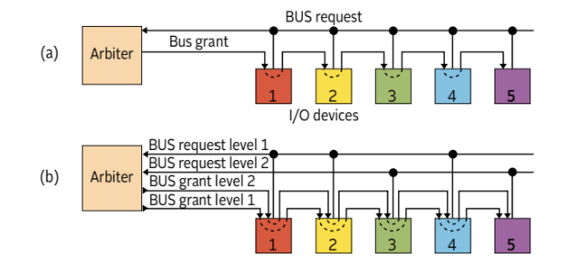

L'arbitraggio dei bus in un sistema informatico è il processo mediante il quale viene gestito l'accesso al bus di sistema da parte dei vari componenti del computer. Il bus è un canale di comunicazione che consente il trasferimento di dati tra la CPU, la memoria e le periferiche (come dischi rigidi, tastiere, monitor, ecc.).
Poiché più dispositivi possono richiedere l'accesso al bus simultaneamente, è necessario un sistema che determini quale dispositivo ottiene l'accesso al bus in un determinato momento, evitando conflitti e assicurando un funzionamento corretto del sistema.
L'arbitraggio è essenziale perché più dispositivi possono competere per l'accesso al bus. I dispositivi coinvolti includono:
Senza un sistema di arbitraggio, potrebbe verificarsi un conflitto quando più dispositivi cercano di accedere contemporaneamente al bus, rallentando o bloccando il funzionamento del sistema.
L'arbitraggio dei bus viene gestito da un componente chiamato "arbitro del bus". Questo arbitro decide quale dispositivo può accedere al bus in un determinato momento, utilizzando diverse tecniche di arbitraggio:
L'arbitraggio dei bus è una parte fondamentale della gestione delle comunicazioni tra le componenti di un computer. Senza un sistema di arbitraggio efficace, il sistema potrebbe diventare inefficiente o addirittura instabile. I vari metodi di arbitraggio, come quelli centralizzati, decentralizzati o a priorità, sono essenziali per garantire che i dispositivi possano lavorare in modo collaborativo, senza conflitti, in modo da ottimizzare le prestazioni complessive del sistema.